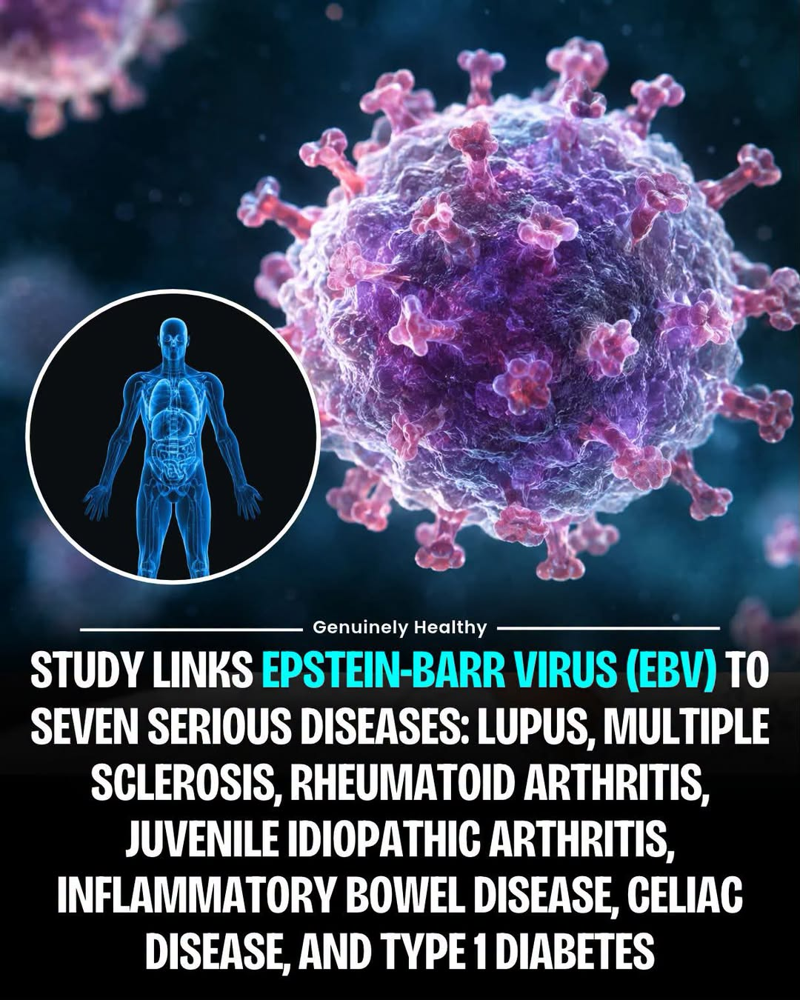

Scientists are finally starting to understand exactly how Epstein Barr virus causes multiple sclerosis.
And it begs the question: How many other diseases are really caused by viruses?
Harvard researchers uncovered a mechanism linking EBV to MS. Louis asks how many other diseases are caused by viruses.
Scientists are finally starting to understand exactly how Epstein Barr virus causes multiple sclerosis.
And it begs the question: How many other diseases are really caused by viruses?
In a new study, researchers led by Harvard Chan School’s Kjetil Bjornevik uncovered a key mechanism driving the link between Epstein-Barr virus (EBV) and multiple sclerosis (MS)—a finding that could inform the development of new therapies for the chronic autoimmune disease.
“EBV is now considered a causal factor, not just a common finding. Still, several open questions remain, and they are important to answer if we are able to translate these findings into something that can benefit patients and those at risk,” said Bjornevik. “The natural next step is to examine the immune response directly.”

Louis says it is now fairly clear Epstein-Barr virus causes MS, and EBV might play a role in other autoimmune diseases, possibly even heart disease, though that evidence is weaker. The shared post summarizes a 2018 Nature Genetics study linking the EBV protein EBNA2 to genetic risk regions in seven autoimmune diseases, without proving causation for all of them.

Louis highlights new research on how EBV provokes T cells that may drive autoimmunity in MS, and a Boston trial of an EBV vaccine for early MS. He asks how many other diseases might be virus-caused.
Louis resurfaces a three-year-old post: the strongest evidence for higher-dose vitamin D is in autoimmune disease, especially MS, and he notes a new JAMA publication on vitamin D treating MS. The VITAL trial of about 25,000 people at Harvard found that 2000 IU vitamin D daily for over 2 years cut autoimmune disease risk by about 40%. CNN coverage of the same trial reports about 30% lower risk with vitamin D and fish oil supplements.
Louis resurfaces a 2022 CNN report on the VITAL trial (about 25,000 people), saying 2000 IU/day of vitamin D for over two years reduced autoimmune disease risk by 40%, and ties it to a new JAMA MS trial. The CNN summary describes older adults on vitamin D and fish oil as about 30% less likely to develop autoimmune disorders.
Louis shares a report that metformin boosts the energy of myelin-repairing cells, which may help regenerate nerve insulation lost in multiple sclerosis. Most evidence is from animal and laboratory work, with early clinical hints.

Louis shares a JAMA trial in which oral cholecalciferol 100,000 IU every two weeks significantly reduced disease activity in clinically isolated syndrome and early relapsing-remitting MS. He speculates it may help other autoimmune diseases. The topic is not cardiovascular.